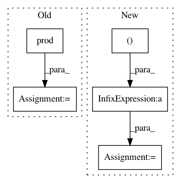

fe8d55ae1870b6c7c3725f7ac7cc6b1d1ac0d39e,tensorforce/models/q_model.py,QModel,tf_q_delta,#QModel#Any#Any#Any#Any#,59
Before Change
next_q_value = tf.where(condition=terminal, x=zeros, y=(self.discount * next_q_value))
delta = reward + next_q_value - q_value // tf.stop_gradient(q_target)
collapsed_size = util.prod(util.shape(delta)[1:])
return tf.reshape(tensor=delta, shape=(-1, collapsed_size))
def tf_loss_per_instance(self, states, internals, actions, terminal, reward):
embedding = self.network.apply(
After Change
terminal = tf.expand_dims(input=terminal, axis=1)
reward = tf.expand_dims(input=reward, axis=1)
multiples = (1,) + util.shape(q_value)[1:]
terminal = tf.tile(input=terminal, multiples=multiples)
reward = tf.tile(input=reward, multiples=multiples)
zeros = tf.zeros_like(tensor=next_q_value)
next_q_value = tf.where(condition=terminal, x=zeros, y=(self.discount * next_q_value))
In pattern: SUPERPATTERN
Frequency: 4
Non-data size: 5
Instances
Project Name: reinforceio/tensorforce
Commit Name: fe8d55ae1870b6c7c3725f7ac7cc6b1d1ac0d39e
Time: 2017-10-26
Author: aok25@cl.cam.ac.uk
File Name: tensorforce/models/q_model.py
Class Name: QModel
Method Name: tf_q_delta
Project Name: dask/dask-image
Commit Name: cbbcea8795e8da754a5b3ffb1a08ef66afd84eef
Time: 2018-09-02
Author: jakirkham@gmail.com
File Name: dask_image/ndmeasure/_utils.py
Class Name:
Method Name: _ravel_shape_indices
Project Name: geomstats/geomstats
Commit Name: 533c15592a59aff3abbde7b0f59148c8eb6f52a7
Time: 2020-01-15
Author: cshewmake2@gmail.com
File Name: geomstats/geometry/hypersphere.py
Class Name: Hypersphere
Method Name: random_uniform
Project Name: chainer/chainerrl
Commit Name: b022bc23a41e92c51d0efb3b64c31d4da2bbb246
Time: 2016-12-28
Author: muupan@gmail.com
File Name: examples/gym/train_dqn_gym.py
Class Name:
Method Name: main